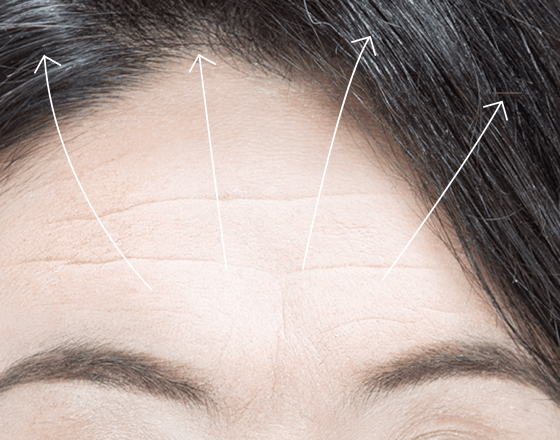
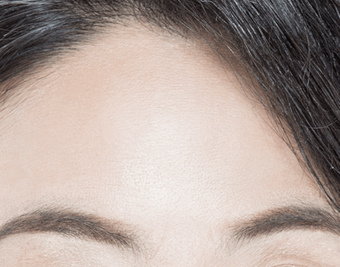
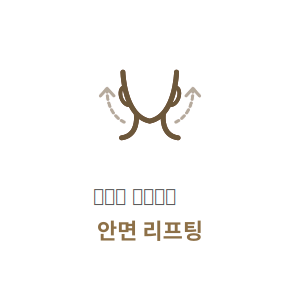

이마, 미간, 눈가주름을 한번에!
#이마
거상술
-

수술 시간
1시간
-

마취방법
수면/국소마취
-

실밥제거
5~7일 후
-

내원치료
2~3회
-

회복기간
5~7일 후
이마 거상술이란?
노화가 진행되면서 얼굴의 윗부분에 나타나는 여러가지 노화증상인
이마주름, 미간주름, 눈가주름, 눈썹처짐 등은 이마 거상술을 통해 한번에 해결할 수 있습니다.
연세자연미는 이마주름의 원인과 정도에 따라 환자의 나이와 성별을 고려해 적합한 방법으로 치료를 진행합니다.
BEFORE
AFTER
이마거상술수술 방법
내시경 이마거상술
이마 정중앙과 양측에 약 1cm 크기의 절개창을 세로로 만들어
내시경을 이용해 당기는 방법으로 흉터를 최소화합니다.
-
1
이마 정중앙과 양측에
1cm의 작은 세로 절개를
만듭니다. -
2
내시경을 삽입하여 골막
아래 혹은 위쪽으로 박리
를 진행합니다. -

3
이마를 아래로 당기는
근육을 절제한 후 이마를
뒤쪽으로 당겨 거상 후
고정합니다. -

4
매끈한 이마 라인을
완성합니다.
이마 거상술과
눈썹 거상술의차이점
이마거상술과 눈썹거상술의 차이점을 이해하고 전문의와의 자세히
상담과 진단을 통해 환자분에게 적합한 방법으로 수술을 진행합니다.
-
이마 거상술
-

상안면부의 연조직 전체를 광범위하게 당겨줌
-
상안면부 전반적 주름(이마, 미간, 콧등, 눈가 주름) 개선
-
눈썹과 눈커풀 처짐을 한번에 개선하고 싶은 경우
이마 거상술 추천
-
-
눈썹 거상술
-
눈썹 위나 아래를 절개 후 봉합
-
처진 눈꺼풀을 절제하고 근육을 절개하고 고정
-
눈과 눈썹 사이의 거리가 멀고 미간과 눈꼬리 주름이
심하지 않은 경우 눈썹 거상술 추천
-
이마 거상술 핵심 포인트
주름의 확실한 개선을 위해 연세자연미는 자세한 상담과 진단을 통해
가장 효과적인 방법으로 수술을 진행합니다.


테크닉
오랜 경험과 숙련된 기술력 으로
결과에 대한 높은 만족도를 드립니다.

함께하면좋은 시술
연세자연미성형외과는 개인의 상태에 따른 노화 증상과 원인에 맞는
여러가지 시술들을 복합적으로 진행하는 맞춤형 안티에이징 수술법으로
자연스럽게 젊어지는 아름다움을 선물해드립니다.


- 